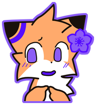

Поддержать лисёнка
Все переводы бесплатные и такими останутся. Донат — просто способ сказать спасибо.
Донат
Через DonationAlerts. Ник и сообщение появятся в списке рядом.
Поддержать ♡ Имя в списке держится от недели и дольше — чем больше сумма, тем дольше.
Уже поддержали
Без денег — тоже помогает
Оценка руководства в Steam. Лайк и «в избранное» поднимают руководство выше, и перевод находят те, кто ищет.
Выбрать игруСообщить об ошибке. Непереведённая строка или опечатка со скриншотом — лучший подарок переводу.
Написать в Discord